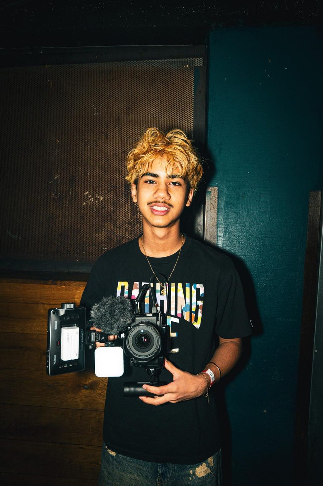
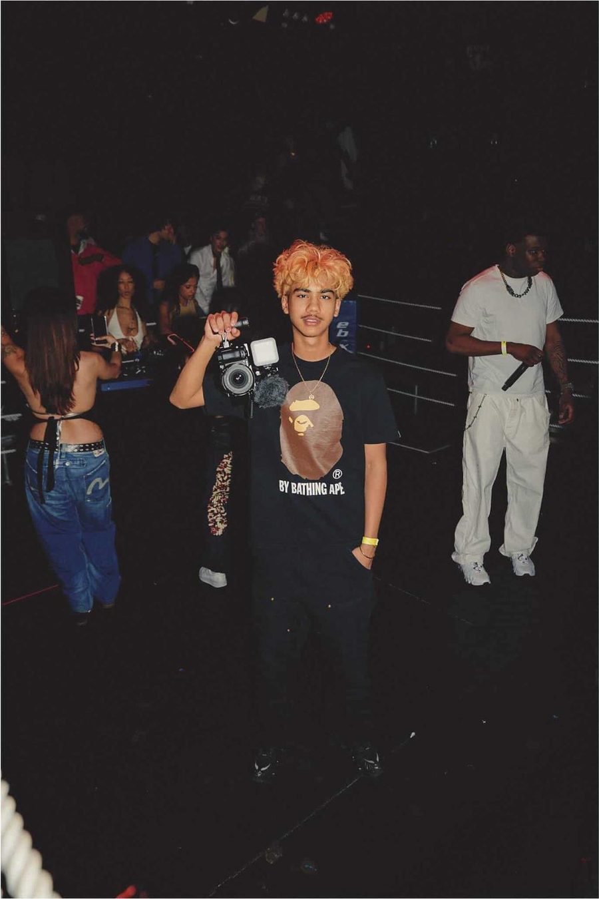

Videographer & filmmaker uit Rotterdam. Concertfilms, muziekvideo's en social content.
Bekijk portfolioNeem contact op

Over mij
Ik ben Augke, videograaf en filmmaker in Rotterdam. Ik studeer Audiovisual Design aan de Willem de Kooning Academy.
Ik focus op concertfilms, muziekvideo's en social media content. Ik werk met artiesten, evenementorganisatoren en creatieve teams om hun energie en visie vast te leggen op film.
Ik werkte al met uiteenlopende artiesten, bij liveshows, videoclips en events in Nederland en in het buitenland. Van filmen en regisseren tot monteren en colour grading: ik doe graag het hele creatieve proces.
Open voor nieuwe projecten en samenwerkingen, in elk format en op elke locatie.
- BasisRotterdam, Nederland
- BeschikbaarWereldwijd
- StudieAudiovisual Design, WdKA
- WerkFilmen, regie, montage, colour grading
- TikTok260K+ likes
Ervaring & opleiding
- Willem de Kooning AcademyAudiovisual Design, huidige studieRotterdam
- Tandartspraktijk ZonnelachMarketing Manager
- Kamera ExpressLogistiekCapelle aan den IJssel
- Theater ZuidpleinCamerawerkRotterdam
- Isala TheaterCamerawerkCapelle aan den IJssel